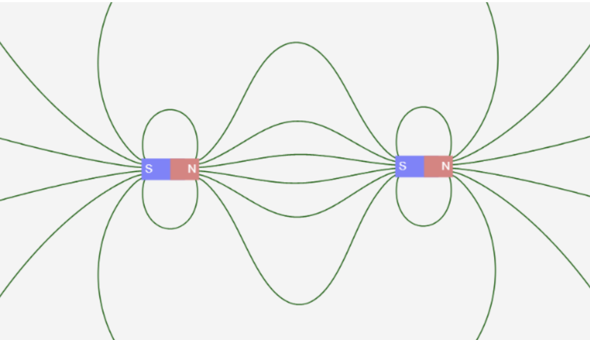

Simulating Mini Golf Using the Raspberry Pi Pico
Cornell University -- ECE 4760 -- Digital Systems Design Using Microcontrollers
A Project By Henry Geller, Robert Haig, and Daniel Wahab
May 2025
This project is a mini golf video game where the controller is an actual golf putter.
Introduction
In the long history of sports video games, golf has carved its own lane. In 2006, the wildly popular Wii Sports game included golf as one of its five sports, which centered around the use of the Wii remote as if it were a golf club. In 2016, Apple launched GamePigeon along with the release of iOS 10, where one of its most popular games was mini golf. The development of golf video games occurred in parallel with the development of golf simulators, which are meant to replicate the experience of playing golf on a real golf course as closely as possible. When using a golf simulator, the player swings real clubs and hits a real ball, the path of the ball is sensed using technology, and then a virtual ball moves through a virtual course on a large projector screen. These simulators are used as an avenue for serious golfers to improve their game when real courses are unavailable or unaffordable. The goal of this project was to combine Wii Golf, GamePigeon mini golf, and a golf simulator into a golf game where a real putter is used to direct the motion of a golf ball in a virtual mini golf course.
Gameplay

Image 1: An action shot of Dan playing the game. He starts with the putter between the magnets and swings in the direction of the VGA screen.
The player can begin playing the game by turning on the Pico. The first screen is a view of the first hole. All holes in the game are shown from a bird's eye view, as if there were a camera stationed above a mini golf hole pointing down. The ball is shown in its starting position. Protruding from the ball is a line which we call the heading vector, which indicates the direction that the ball will go if the putter is swung from its current position. As the player holds the putter above the floor mat containing carefully arranged magnets, the player can change the direction of the heading vector by angling the putter, as if changing the direction they intended to hit a real ball sitting on the mat. So that the player does not need to turn around and face away from the screen, the '9' key can be pressed on the keypad in order to rotate the heading vector by 90 degrees. Once the player has lined up their shot, they can swing the putter as they normally would to hit a golf ball, with a back swing followed by a front swing and a follow through. Based on the speed of the putter and the orientation of the club, the ball will move on the screen in a physically realistic manner, slowing down over time and bouncing off the boundaries of the green. In the upper right corner of the screen, there is a continuous display of the player's score for the hole and the round.

Image 2: The scoreboard at the top of the screen indicating that the user has taken four shots on hole 1 which is a par 3.
Each hole is assigned a par, and the score relative to par after each hole is what affects the score for the round. Once the ball goes in the hole, then the next hole begins immediately. The game consists of four holes. At the end of the final hole, there is a screen which says 'Game Over' and reports the player's final score relative to par. At any time, including at the 'Game Over' screen, the player can restart the game by pressing '1' on the keypad.
High-Level Design
The centerpiece of the system running this game is the Raspberry Pi Pico, which contains an RP2040 microcontroller. The Pico is powered by a laptop via a USB connection, and it controls three different peripheral devices: a VGA screen, an inertial measurement unit (IMU), and a keypad.
Figure 1: A high-level hardware diagram of the project. The Pico connects to three peripheral devices: the keypad, the VGA screen, and the IMU. The magnets at the top are read by the magnetometer.
The RP2040 supplies the VGA screen with the five signals it needs to operate: horizontal sync, vertical sync, red, green, and blue. These signals are created and timed using a VGA driver written in assembly for the Programmable I/O module of the RP2040 by our professor Hunter Adams [1].
The IMU is a 9-axis IMU, which means it can read acceleration, angular velocity, and magnetic field in 3 axes each [2]. It is attached to the club head of the putter, and it reports information about the club's orientation and speed to the RP2040, so that the ball can move accordingly. The putter we use is a Tour Edge Reaction 3 putter.
Image 3: The IMU resting on top of the putter.
The keypad is a simple 12-key keypad that allows the user to enter any number 0-11, although only numbers 1 and 9 are used in this game. The code which probes the keypad for any pressed keys was also written by Hunter Adams [3].
On the software side, there are three threads running on the RP2040, with each being responsible for interacting with one of the peripheral devices.
Software
Keypad
The simplest of the three threads is the thread responsible for sensing the pressing of keys on the keypad. The code for this came directly from the demo code provided by Professor Adams with little modification.
When using a mechanical button, there is concern that one press of the button may be detected as multiple distinct presses, due to the spring inside the button that may cause it to oscillate for some time. To help prevent this, we require a button press to be detected multiple times in succession before officially declaring that a press has been detected. Therefore, rather than watching for a rising or falling edge of a signal and recording a button press each time, there is a finite state machine that is used to verify a button press.
Figure 2: Debouncing state machine for keypad presses.
The keypad thread contains a while loop that runs continuously as long as the system is operational. Each time through the while loop, a check of all the buttons is performed to detect if any buttons are currently pressed down. This check must show the same button being pressed on two consecutive iterations of the while loop in order for that button press to officially be declared. Similarly, when a button is let go, the lack of a button press must be detected for two consecutive iterations in order for the press to be considered over. This behavior is enforced by the use of an FSM which contains four states: NOT_PRESSED, MAYBE_PRESSED, PRESSED, and MAYBE_NOT_PRESSED. The point at which a press has been officially detected is during the state transition from MAYBE_PRESSED to PRESSED, and the point at which a press is officially over is during the state transition from MAYBE_NOT_PRESSED to NOT_PRESSED, although the end of a press never has any effect on the game.
There are only two buttons on the keypad that have any effect on the game. If the '1' button is pressed at any time during the game, the game is reset to its initial state, when there is no score at the beginning of the first hole. If the '9' button is pressed, then the heading vector protruding from the ball is rotated 90 degrees clockwise, to make it easier for the player to hit the ball in any direction they would like. The heading vector is updated regardless of whether it is shown on the screen at the time.
IMU
The ability to interface with the IMU was its own software problem that needed to be solved. We decided that for our purposes the IMU values only needed to be read at a rate of 100 Hz, or every 0.01 seconds. To achieve this, we utilized the hardware system timer on the RP2040, and used it to generate an interrupt every 0.01 seconds. This interrupt triggers an interrupt service routine (ISR) which reads data from all 9 axes of the IMU using the function icm20948_read_raw(). This data includes the acceleration data that is used to detect swings and swing speed, as well as the magnetometer data that is used to calculate heading. The last thing the ISR does is signal the thread that is associated with the IMU.
In addition to the ISR, there is a thread dedicated to the IMU which contains a while loop that is always running. However, at the top of the loop body, there is a direction for the thread to wait until it has received the signal from the ISR to continue running. The effect of this is that the body of the while loop runs once each time the ISR is called. We expect that the code would have had the same functionality if the body of the loop had been contained within the ISR itself.
The responsibility of the rest of the loop body is to record swings of the putter based on the IMU data. A swing of the putter is detected via a progression through a finite state machine.
Figure 3: Swing detection state machine.
State transitions are triggered by sequences of acceleration values along the x-axis, which points in the direction that the ball would move if the club hit a real ball. The system begins in the IDLE state, which means that no swing is currently taking place. The program has a need for the heading of the club, both for the displaying of a heading vector and for the movement of the ball after a swing. Since there is an inherent amount of noise in the magnetometer readings, the heading angle that is used is always an average of the previous 20 readings, which are captured over a period of 0.2 seconds. In the IDLE state, the only action that is taken is to remove the oldest value from a FIFO queue of heading readings, and to replace it with the newest value. Then, the average of the 20 headings is re-calculated and used by the animation thread to display the heading vector in the proper place.
A backswing is sensed when there has been 15 consecutive acceleration readings of at least -1.5, which is a condition that was chosen via experimentation. In the BACKSWING state, the queue stops being updated, and the global variable representing the heading vector does not get updated. This means that the direction of the heading vector at the time that the BACKSWING state is entered is the one that will be used to make the ball move when the front swing is detected. This saving of the heading vector value happens intentionally, since the moving of the club off of the mat causes undesired variations in the magnetometer readings. The system remains in the BACKSWING state until five consecutive acceleration values that are greater than 0.5 have been measured, at which point there is a transition into the FRONTSWING state.
The length of the FRONTSWING state is always 17 iterations, during which time all the x-axis acceleration values are recorded, encompassing 0.17 seconds. An average of these values is used to determine the initial speed of the ball after it is hit. There is a limit of 10 pixels per frame on how fast the ball can move right after it is hit. At the end of the final iteration, the global variable swing is set to true, which triggers the animation thread to begin moving the ball. There is then an automatic state transition back to the IDLE state, to prepare to detect the next swing.
Green Generation
One of the goals that we wanted to achieve was to have several different holes that would make up the mini golf course. Each hole would be a different shape, with the boundary colored white, the green colored green, and the rest of the screen colored black. Due to the limited amount of RAM on the RP2040, it was not possible to store the VGA images of any extra greens in RAM. Thus, we instead created VGA images of several holes on a separate computer, and then stored them in the RP2040's flash memory when programming the board.
This was the responsibility of boundary.c, which borrows functions from the provided C file vga16_graphics.c in order to populate an array with the colors of different pixels [4].The way that the provided VGA animation code supplies data to the VGA screen is through the use of a DMA channel which reads data from a vga_data_array, which is an array that is long enough to hold four bits for each pixel on a 640x480 screen. In boundary.c, we create a new array of the same size, and then use the provided drawPixel() function to write data into that array. The program then prints out the contents of that array into a properly formatted header file, with the help of a Linux bash script. Aside from the array containing the VGA image, there are also variables created and initialized that represent the vertices of the hole boundary, the number of vertices, the hole location, the initial location of the ball, and the par of the hole. We ran this program several times for different holes, and each time copied the resulting header file into the Pico project directory, so that it would be included in the flash memory of the RP2040.
Each hole has its own dedicated header file containing a VGA image of the hole and the series of variables specific to the hole. These variables are referenced inside switch-case statements in the initHole() function in animation.c, and the drawSavedImage() function in vga16_graphics.c.
Animation on the VGA Screen
The piece of software which was most challenging to develop was the animation thread, which was responsible for all of the game's graphics and physics. The thread contains a while loop which runs once for each frame, and has the responsibility of correctly populating vga_data_array in vga16_graphics.c with the correct color values for each pixel in each frame. The animation thread uses its own FSM to keep track of a player's progression through a hole.
Before discussing each of these states in detail, we will first list the helper functions which we wrote that serve as the tools for the animation thread to use. Many of the functions have self-evident purposes, such as the following:
- drawGolfBall()
- eraseGolfBall()
- drawHeadingVector()
- eraseHeadingVector()
- drawHole()
- displayScores()
But, there are also many custom functions which are more complex and deserve more attention:
| Function | Description |
|---|---|
| drawBoundary() | - Draw the white boundary of the green by drawing lines between each set of adjacent vertices |
| drawSavedImage() (in vga16_graphics.c) |
- References the header file of a given hole, finds the VGA image saved there, and writes it to vga_data_array |
| rectBoundsAndNormal() |
- Receives the coordinates of the two endpoints of a side of a green - Calculates the maximum and minimum y values out of those two points - Calculates the normal vector of that side |
| boundaryInfo() | - Given the set of vertices that make up the shape of a green, call rectBoundsAndNormal() on every side |
| initHole() |
- Contains a large switch-case statement that references all the variables in a given hole's header file and brings their values into the program - Calls drawSavedImage(), boundaryInfo(), drawHole(), drawGolfBall(), and displayScores() to correctly display the initial state of the next hole - If the hole that just finished was the final hole on the course, display the 'Game Over' screen |
| hitBall() | - Uses the speed and heading data from the IMU thread to set the velocity of the ball |
| readVGA() (in vga16_graphics.c) |
- Accesses a particular pixel in vga_data_array and returns the color of that pixel |
Finally, the function which was most difficult to develop and gave us the most trouble was updatePos(), which is responsible for moving the ball each frame, which includes detecting collisions with the hole boundary and moving the ball accordingly. The function first calls readVGA() on a set of 48 pixels surrounding the ball, looking for a white pixel, which must be part of the boundary. If a white pixel is found, then it must be determined what side of the green that pixel belongs to. This is where the maximum and minimum x and y for each side that was calculated by rectBoundsAndNormal() becomes useful. This information is used by each side to claim a rectangular portion of the screen that belongs to that side.
Figure 4: Example of a side of a green and the rectangle within which it claims all collisions.
Therefore, the side that a pixel belongs to can be identified by finding which rectangle it belongs to. Once the side has been identified, then the corresponding normal vector needed for the collision equations is also known. If the ball collides with two sides simultaneously, then an average of the two normal vectors is used. It is possible that the ball may overlap with a side for more than one frame, so once a collision is detected and the trajectory of the ball is altered, no more collisions can be detected until the end of the ongoing collision, which occurs when no more white pixels are found surrounding the ball. In the event that the ball finds a white pixel from one side in one frame and then a white pixel from a different side in the next frame, that new side that is found will trigger a second collision.
After checking all of this collision logic, there are also the basic movements of the ball that occur every frame, whether a collision has occurred or not. The ball is moved by a certain amount of pixels according to its velocity, and each component of the velocity is scaled by 0.98 each frame as a way of applying friction to the ball. Finally, a check is made to see if the ball has landed in the hole or not, and if the ball has landed in the hole then the player's score for that hole is added to the overall score.
Now that the individual functions have been described, we can provide a high-level description of the state machine at work.
Figure 5: Animation state machine.
The SIZING_UP state refers to the state where the ball is at rest on the green, and the player is able to to view changes in the heading vector by rotating the club as they are deciding how to hit their next shot. The term “sizing up” comes from golf, and refers to the action that a player does as they analyze their situation and decide what strategy to adopt.
Once the IMU thread sets the swing bool to true, then a state transition is made to BALL_IN_MOTION, and hitBall() is called using data from the IMU thread. The ball then moves throughout the green, gradually losing speed due to friction and colliding with any walls that it finds. Once the ball stops rolling, then there is a state transition back to SIZING_UP, such that the player can take another stroke. If the ball lands in the hole, then there is a state transition to SUNK, where initHole() is called on the next hole and there is immediately a state transition back to SIZING_UP.
By examining the global constants, variables, and functions at the top of animation.c, it is clear that this project would have an improved coding style if it were object-oriented. Objects in the game such as the ball, hole, or green could be represented as objects if this project were done in a programming language that could support it, and that would likely result in improved code quality.
Serial Interface
One last piece of software to mention is one that was created only for debugging purposes. Before the IMU was integrated into the system, the physics and collision logic was tested by triggering swings through the Pico's serial interface. By entering a ball speed and a ball direction, then the ball would accordingly as if it had received those values from the putter. Once the IMU was integrated, this thread was no longer added to the scheduler, and the serial terminal was used to monitor the IMU by printing out the values it was reading.
Hardware
ICM 20948
Our main peripheral device was SparkFun's ICM 20948 breakout board, a 9-axis IMU that we used to collect accelerometer and magnetometer data.
Image 4: SparkFun's ICM 20948 breakout board [5].
Unfortunately, all libraries we could find to communicate with the IMU were specific to the Arduino. While the Raspberry Pi Pico is able to run .ino C++ code, it would have been difficult to incorporate it into our C code base. As such, we decided it would be reasonable to write our own library to communicate with the device. To do this, we referenced an Arduino library with working sample code, picked out the necessary parts, and converted them into C and used proper Pico SDK calls for I2C and other communication [6].
The most difficult part of this was to initialize the sensor to give us the values that we wanted because the device is much more complicated than the MPU 6050 IMU that we previously used in the course.
First, the ICM 20948 is broken into several banks containing different useful registers as opposed to having just one, and we needed a way to switch between different banks to write to and read from. To do this, we needed to write to the REG_BANK_SEL register with the bank number (0, 1, 2, or 3). The ability to write to specific registers on the intended bank allowed us to move forward with device initialization.
To initialize the device to our specifications, we needed to set the clocking by twice writing to the PWR_MGMNT_1 register on bank 0, once to reset the device's clock and once to set its frequency. Next we enable the Accel/Gyro interface by writing to the PWR_MGMNT_2 register on bank 0.
We also had to configure the accelerometer to our specifications. For simplicity, we chose to use the same specifications as we did in lab; our range was ±2 g's, and our sample rate was 1 kHz (more than what we realistically needed). To add these specifications, we needed to write to the ACCEL_CONFIG register on bank 2.
An even tricker aspect of the sensor setup was to initialize the magnetometer. The ICM 20948 is set up so that the first 6 degrees of freedom (accelerometer and gyroscope) are close together on the chip. In fact, the chip is a multi-chip module with two dies integrated into one package, where the first one contains the accelerometer and gyroscope, and the second contains an AK09916, a 3-axis magnetometer. The consequence of this is that while setting up and reading from the accelerometer and gyroscope are (relatively) easy, doing the same for the magnetometer is not.
To interface with the magnetometer, we first need to enable I2C master mode, allowing the first chip die to read values from an auxiliary sensor (in our case the AK09916 magnetometer). The Interface Bypass Mux is disabled in this mode, so that the ICM 20948's I2C master takes control of the sensor bus and reads the values coming from the AK09916, disabling pass-through mode and hence turning off the AUX_CL and AUX_DA lines below.
Figure 6: ICM 20948 block diagram showing the AK09916's datapath through the auxiliary bus (bottom) [2].
Setting the enable bit in the I2C_SLV0_CTRL register then forwards data coming from the auxiliary sensor I2C bus to the first available EXT_SLV_SENS_DATA register, which conveniently is directly after the registers containing data from the first six-degrees of freedom which we already access. This allows us to only perform one 21-byte long data acquisition of the successive registers.
Electromagnetic Theory & Magnet Setup
To detect heading with our magnetometer, we placed two strong magnets into a foam board creating a magnetic field perpendicular to the direction that we were swinging that overwhelmed the magnetic field of the earth and other equipment in the lab.
Image 5: Putter and IMU between the North and South ends of the two magnets embedded into the foam surface.
In order to create a uniform magnetic field that our magnetometer could measure, we placed the magnets so that the north pole of one pointed to the south pole of the other resulting in magnetic field lines pointing from one end of the magnet to the other.

Figure 7: Magnetic Field of Two In-Line Magnets [7].
Since the magnetometer measures strength of a magnetic field in the x, y, and z directions, we found that we were able to measure in either the x or y direction which were both linearly mapped to degrees of rotation, allowing us to correspond our heading vector with our measurement here. We did, however, realize that the measurements collected were different when we were set up on the floor or on top of the desk, possibly due to steel-reinforced flooring and other equipment on and around the desks in the lab. This forced us to re-calibrate our linear mapping from magnetometer measurements to degrees each time we moved the setup of the project.
We also played with the distance that we placed the magnet from the center of the foam board where the user was expected to hold the putter. We found that when the magnets were too close to the IMU, the magnetometer would become overwhelmed and give measurements that did not reflect the actual heading of the clubface. This was especially apparent when a user wanted to swing the putter at an angle, and would naturally pull the putter back in the direction of one of the two magnets. To reduce this effect we widened the gap between the magnets. We were worried at first that this would reduce the strength of the magnetic field that we were measuring, but it turned out that the field was still strong enough to gain accurate measurements. The wider gap between magnets allowed for angled shots, as the club never got too close to the magnets.
Hardware Testing
As expected, when interfacing with a new I2C device there were some initial challenges. When we first tried to communicate with the IMU via I2C, we would get junk data instead of acceleration, gyroscope, and magnetometer data. We first hooked the device to an oscilloscope to see if we could correctly read the device's ID from the WHO_AM_I register on bank 0, which should return 0xEA. Seeing this value consistently appear on the oscilloscope gave us confidence that we were reading values from registers correctly, so there had to be an issue with our initialization of the sensors.
Image 6: Scope showing the content of the WHO_AM_I register after a series of I2C reads.
The initialization of the individual sensors was tricky to debug, as there were several steps that we needed to follow (as described above in the IMU setup section). There was spotty documentation as to what needed to happen to initialize the devices, but after finding a reliable source we were able to successfully get everything to give expected data [6].
The next thing that we needed to do was to make sense of the data that was coming through the IMU. The accelerometer was very self-explanatory: measuring acceleration in the z direction when the IMU was flat on a table yielded ~9.8 m/s^2 which is as expected. On the other hand, the data coming from the magnetometer was more difficult to make sense of because at first it seemed random. However, we quickly saw that rotating the IMU through magnets did in fact change the outgoing values from the magnetometer. Using two points and their known angles, we were able to see that the values were close enough to linear, so we were able to map magnetometer values to heading angles.
One last thing that we wanted to experiment with was the I2C baud rate. We had experienced some freezing and slowness at times from our game, and figured that it may have to do with the I2C bus as lost I2C frames can certainly lead to a program freezing. The default rate is 400 kHz which is far higher than what we require, so we dropped the baud rate to 40 kHz. We found that this change made our program significantly snappier, more responsive, and resistant to crashes.
Results
Accomplishments
In the end, our game did exhibit the fruits of some significant accomplishments. The biggest accomplishment was one that we did not expect to be a major accomplishment: reading data from the 9-axis IMU. This task took more of our time than any other task, and forced us to abandon some of our more advanced ideas that we did not have time left to implement. Moreover, the code which interacted with the IMU was developed separately from the rest of the software in the system. One of the final tasks that we undertook was the integration of the IMU code with the rest of the system, and this went smoothly. Swings from the serial thread were easily replaceable by swings from the IMU, so we were able to move on and focus on other issues.
Additionally, we were successful in creating smooth gameplay code that interacted with the club. It is clear to see while using the club that softer swings correspond with slower ball movement, and harder swings correspond with faster ball movement. Heading was also incredibly smooth, and pivoting the club within the magnets directly corresponded with the heading vector that we displayed on the ball.
Another accomplishment was the green generation code boundary.c, which could generate a new green image by just providing it with a set of ordered vertices. This combined with the fact that the collision logic only depended on finding a white pixel meant that the code is very extensible, which means that it is easy to create new holes and add them to the course.
We were also proud of several smaller features such as using the keypad to add 90 degrees to heading, realistic ball speeds/slowing down due to friction, and testing architectures.
Known Issues
Despite our successes, there are regrettably known issues in various areas of the program, due to there being a limited amount of time we could spend on the project. The reasons for these issues are unknown unless stated otherwise. Here is a summary:
- The biggest issue with gameplay is that on occasion the ball will phase through the boundary of the hole into the black area surrounding the green. This happens about once every 20 strokes.
- While boundary.c was intended to be able to generate a green of any shape, there are certain shapes for which the resulting image is incorrect, either due to black covering part of the green or green covering part of the black.
- The way in which swings are detected based on the accelerometer data is prone to unintended behavior. Often one swing is counted as two. A second swing occurring while the ball is in motion should be prevented.
Future Possibilities
We unfortunately ran out of time to implement some of the ideas that we had including the following:
- The magnetometer data is only reliable if the putter is being held within a specific location between the two magnets. Adding more magnets to create a uniform field over a plane instead of a line would make this more robust.
- The speed of a swing could be calculated from the accelerometer values in a better way. One possibility would be to use a complementary filter to calculate the angle of the club with respect to the ground, and record the change in angle. Alternatively, using the original concept, the conditions that govern the state transitions in the swing FSM could be chosen more carefully.
- More holes could be added with unique shapes that provide varying levels of difficulty for the player.
- There could be additional objects and obstacles added to the green, such as sand or water traps, or a slope as opposed to being only flat.
- There could be sound effects that accompany the game, such as the sound of the ball being hit, the ball landing in the hole, or crowd reactions.
Conclusions
Overall our design met many of our expectations. On the hardware front, we were able to successfully implement real-time detection of the putter’s orientation and speed. For software, we were able to repurpose the provided VGA drawing algorithms to streamline the rendering of different golf holes on the VGA screen. We were also able to implement the physics of the golf ball’s interactions with its environment, and create a framework of state machines that enables the player experience. We also came up with a way to create golf holes and store them in flash memory, and created an interface to reset the golf hole and golf ball using the keypad with debouncing implemented. All of this resulted in our final deliverable which was a working golf game, playable on a computer screen.
However, there is one thing which, in hindsight, we could have done better or differently. One such thing is that in the beginning stages of development, we spent a significant amount of time thinking about what kinds of features we eventually wanted the game to have. Many of those ideas were never attempted because we spent so much time on the basic features of the game, so that time was essentially wasted. We could have started actual work towards a smaller goal earlier on, and had more of a sense of urgency in the first week of the project, which would have resulted in a better product.
Group & Work Distribution
Henry Geller
hng8@cornell.edu
Focused on hardware, sensor integration, and hardware testing
Group's resident golf nerd
Robert Haig
rdh247@cornell.edu
Focused on graphics, collision logic, and green generation
Daniel Wahab
dow26@cornell.edu
Focused on graphics, green generation, and green design
Appendix A: Permissions
The group approves this report for inclusion on the course website.
The group approves the video for inclusion on the course youtube channel.
Appendix B: References
[1] V. Hunter Adams. "PIO Assembly VGA Driver for RP2040 (Raspberry Pi Pico)." Accessed May 2025. [Online]. Available: https://vanhunteradams.com/Pico/VGA/VGA.html
[2] TDK. ICM-20948. "World's Lowest Power 9-Axis MEMS MotionTracking™ Device." DS-000189. Jun, 2017. [Online]. Available: https://cdn.sparkfun.com/assets/7/f/e/c/d/DS-000189-ICM-20948-v1.3.pdf
[3] V. Hunter Adams. "Interfacing a 3x4 matrix keypad with RP2040." [Online]. Accessed May 2025. Available: https://vanhunteradams.com/Pico/Keypad/Keypad.html
[4] V. Hunter Adams. vga16_graphics.c [Online]. Available: https://github.com/vha3/Hunter-Adams-RP2040-Demos/tree/master/VGA_Graphics
[5] SparkFun Electronics. "SparkFun 9DoF IMU Breakout - ICM-20948 (Qwiic)." Accessed May 2025. [Online] Available: https://www.sparkfun.com/sparkfun-9dof-imu-breakout-icm-20948-qwiic.html
[6] D. Tornqvist. "icm-20948-arduino-library." Github.com. Accessed May 2025. [Online]. Available: https://github.com/dtornqvist/icm-20948-arduino-library/tree/master/src
[7] Javalab. "Magnets and Electromagnets." javalab.org. Accessed May 2025. [Online]. Available: https://javalab.org/en/magnet_and_electromagnet_en/
[8] Hilite.me. Accessed May 2025. [Online]. Available: http://hilite.me
[9] J. Skovira. ECE 5725 Final Project Website Sample HTML Code.
Appendix C: Parts List
- Raspberry Pi Pico
- 12-Key Keypad
- VGA Monitor
- SparkFun 9DoF IMU Breakout ICM-20948
- Henry's old Tour Edge Reaction 3 Putter
- Elmer's Foam Sheet
- Magnets, Breadboard, Wires, Resistors, etc - Provided by lab
Appendix D: Code
animation.c
1 2 3 4 5 6 7 8 9 10 11 12 13 14 15 16 17 18 19 20 21 22 23 24 25 26 27 28 29 30 31 32 33 34 35 36 37 38 39 40 41 42 43 44 45 46 47 48 49 50 51 52 53 54 55 56 57 58 59 60 61 62 63 64 65 66 67 68 69 70 71 72 73 74 75 76 77 78 79 80 81 82 83 84 85 86 87 88 89 90 91 92 93 94 95 96 97 98 99 100 101 102 103 104 105 106 107 108 109 110 111 112 113 114 115 116 117 118 119 120 121 122 123 124 125 126 127 128 129 130 131 132 133 134 135 136 137 138 139 140 141 142 143 144 145 146 147 148 149 150 151 152 153 154 155 156 157 158 159 160 161 162 163 164 165 166 167 168 169 170 171 172 173 174 175 176 177 178 179 180 181 182 183 184 185 186 187 188 189 190 191 192 193 194 195 196 197 198 199 200 201 202 203 204 205 206 207 208 209 210 211 212 213 214 215 216 217 218 219 220 221 222 223 224 225 226 227 228 229 230 231 232 233 234 235 236 237 238 239 240 241 242 243 244 245 246 247 248 249 250 251 252 253 254 255 256 257 258 259 260 261 262 263 264 265 266 267 268 269 270 271 272 273 274 275 276 277 278 279 280 281 282 283 284 285 286 287 288 289 290 291 292 293 294 295 296 297 298 299 300 301 302 303 304 305 306 307 308 309 310 311 312 313 314 315 316 317 318 319 320 321 322 323 324 325 326 327 328 329 330 331 332 333 334 335 336 337 338 339 340 341 342 343 344 345 346 347 348 349 350 351 352 353 354 355 356 357 358 359 360 361 362 363 364 365 366 367 368 369 370 371 372 373 374 375 376 377 378 379 380 381 382 383 384 385 386 387 388 389 390 391 392 393 394 395 396 397 398 399 400 401 402 403 404 405 406 407 408 409 410 411 412 413 414 415 416 417 418 419 420 421 422 423 424 425 426 427 428 429 430 431 432 433 434 435 436 437 438 439 440 441 442 443 444 445 446 447 448 449 450 451 452 453 454 455 456 457 458 459 460 461 462 463 464 465 466 467 468 469 470 471 472 473 474 475 476 477 478 479 480 481 482 483 484 485 486 487 488 489 490 491 492 493 494 495 496 497 498 499 500 501 502 503 504 505 506 507 508 509 510 511 512 513 514 515 516 517 518 519 520 521 522 523 524 525 526 527 528 529 530 531 532 533 534 535 536 537 538 539 540 541 542 543 544 545 546 547 548 549 550 551 552 553 554 555 556 557 558 559 560 561 562 563 564 565 566 567 568 569 570 571 572 573 574 575 576 577 578 579 580 581 582 583 584 585 586 587 588 589 590 591 592 593 594 595 596 597 598 599 600 601 602 603 604 605 606 607 608 609 610 611 612 613 614 615 616 617 618 619 620 621 622 623 624 625 626 627 628 629 630 631 632 633 634 635 636 637 638 639 640 641 642 643 644 645 646 647 648 649 650 651 652 653 654 655 656 657 658 659 660 661 662 663 664 665 666 667 668 669 670 671 672 673 674 675 676 677 678 679 680 681 682 683 684 685 686 687 688 689 690 691 692 693 694 695 696 697 698 699 700 701 702 703 704 705 706 707 708 709 710 711 712 713 714 715 716 717 718 719 720 721 722 723 724 725 726 727 728 729 730 731 732 733 734 735 736 737 738 739 740 741 742 743 744 745 746 747 748 749 750 751 752 753 754 755 756 757 758 759 760 761 762 763 764 765 766 767 768 769 770 771 772 773 774 775 776 777 778 779 780 781 782 783 784 785 786 787 788 789 790 791 792 793 794 795 796 797 798 799 800 801 802 803 804 805 806 807 808 809 810 811 812 813 814 815 816 817 818 819 820 821 822 823 824 825 826 827 828 829 830 831 832 833 834 835 836 837 838 839 840 841 842 843 844 845 846 847 848 849 850 851 852 853 854 855 856 857 858 859 860 861 862 863 864 865 866 867 868 869 870 871 872 873 874 875 876 877 878 879 880 881 882 883 884 885 886 887 888 889 890 891 892 893 894 895 896 897 898 899 900 901 902 903 904 905 906 907 908 909 910 911 912 913 914 915 916 917 918 919 920 921 922 923 924 925 926 927 928 929 930 931 932 933 934 935 936 937 938 939 940 941 942 943 944 945 946 947 948 949 950 951 952 953 954 955 956 957 958 959 960 961 962 963 964 | /** ECE 4760: Digital Systems Design Using Microcontrollers Mini-Golf Simulator Robert Haig (rdh247), Henry Geller (hng8), Daniel Wahab (dow26) Demonstrated to course staff 5/9/25 */ // Include standard libraries #include <stdio.h> #include <stdlib.h> #include <math.h> #include <string.h> // Include Pico libraries #include "pico/stdlib.h" #include "pico/divider.h" #include "pico/multicore.h" // Include hardware libraries #include "hardware/pio.h" #include "hardware/dma.h" #include "hardware/clocks.h" #include "hardware/pll.h" #include "hardware/i2c.h" #include "hardware/pwm.h" #include "hardware/sync.h" // Include the VGA graphics library #include "vga16_graphics.h" // Include protothreads #include "pt_cornell_rp2040_v1_3.h" // flash data #include "greens1.h" #include "greens2.h" #include "greens3.h" #include "greens4.h" #include "greens5.h" // Fixed point data type typedef signed int fix15 ; #define multfix15(a,b) ((fix15)(((( signed long long)(a))*(( signed long long)(b)))>>16)) #define float2fix15(a) ((fix15)((a)*65536.0f)) // 2^16 #define fix2float15(a) ((float)(a)/65536.0f) #define int2fix15(a) ((a)<<16) #define fix2int15(a) ((a)>>16) #define divfix(a,b) ((fix15)(((( signed long long)(a) << 16 / (b))))) #define absfix15(a) abs(a) #define char2fix15(a) (fix15)(((fix15)(a)) << 15) ///////////////////////////////////// OVERALL ////////////////////////////////////// #define IMU_RATE 10000 #define FRAME_RATE 33000 #define FRICTION 0.98 int num_strokes = 0; int round_score = 0; bool game_over = false; enum State { SIZING_UP, BALL_IN_MOTION, SUNK }; enum State STATE; ///////////////////////////////////// BALL ////////////////////////////////////// char ball_color = WHITE ; double speed; double ball_direction; bool swing; bool hole_in_progress; fix15 ball_x; fix15 ball_y; fix15 ball_vx; fix15 ball_vy; ///////////////////////////////////// HOLE ////////////////////////////////////// #define HOLE_RADIUS 8 int num_hole; short hole_x; short hole_y; short par; int ball_start_x; int ball_start_y; ///////////////////////////////////// GREEN ////////////////////////////////////// // for drawLine #define swap(a, b) { short t = a; a = b; b = t; } typedef struct{ short x; short y; } Pixel; Pixel vertices[20]; int num_vertices; typedef struct { short low_x; short high_x; short low_y; short high_y; fix15 nx; fix15 ny; } Side; Side sides[20]; ///////////////////////////////////// SWINGS ////////////////////////////////////// double heading_angle; bool heading_locked_in = false; int counter = 0; float accel_accum = 0.0; int heading_vector_bias = 0; enum Swing_State { IDLE, BACKSWING, FRONTSWING }; enum State SWING_STATE; typedef struct { short ball_x; short ball_y; short heading_x; short heading_y; } Heading_Vector; Heading_Vector last_heading_vector; //////// FIFO queue of heading readings /////////// #define QUEUE_SIZE 20 float q_heading_values[20]; int q_head = 0; int q_tail = 0; int q_count = 0; float queue_avg(){ float sum = 0; for (int i = 0; i < QUEUE_SIZE; i++){ sum += q_heading_values[i]; } return sum / 20.0; } void enqueue(float heading_value){ q_heading_values[q_tail] = heading_value; q_tail = (q_tail + 1) % QUEUE_SIZE; q_count++; } void dequeue(){ q_head = (q_head + 1) % QUEUE_SIZE; q_count--; } bool queue_full(){ if (q_count == QUEUE_SIZE){ return true; } else { return false; } } ///////////////////////////////////// COLLISIONS ////////////////////////////////////// // for sensing surrounding pixels short dx[48] = {0,1,2,3,3,4,4,5,5,5,6,6,6,6,6,5,5,5,4,4,3,3,2,1,0,-1,-2,-3,-3,-4,-4,-5, -5,-5,-6,-6,-6,-6,-6,-5,-5,-5,-4,-4,-3,-3,-2,-1}; short dy[48] = {-6,-6,-6,-6,-5,-5,-4,-4,-3,-2,-2,-1,0,1,2,2,3,4,4,5,5,6,6,6,6,6,6,6,5, 5,4,4,3,2,2,1,0,-1,-2,-2,-3,-4,-4,-5,-5,-6,-6,-6,}; bool collision_ongoing = false; bool in_collision = false; int last_detected_side = -1; ///////////////////////////////////// KEYPAD ////////////////////////////////////// #define BASE_KEYPAD_PIN 9 #define KEYROWS 4 #define NUMKEYS 12 unsigned int keycodes[12] = {0x28, 0x11, 0x21, 0x41, 0x12, 0x22, 0x42, 0x14, 0x24, 0x44, 0x18, 0x48}; unsigned int scancodes[4] = {0x01, 0x02, 0x04, 0x08}; unsigned int button = 0x70; volatile int press_val = -1; int prev_key = 0; char keytext[40]; enum Debouncing_State { NOT_PRESSED, MAYBE_PRESSED, PRESSED, MAYBE_NOT_PRESSED }; enum Debouncing_State DB_STATE; ///////////////////////////////////// IMU ////////////////////////////////////// #define I2C_CHAN i2c1 #define SDA_PIN 26 //gpio 8, pin 11 #define SCL_PIN 27 //gpio 9, pin 12 #define I2C_BAUD_RATE 40000 //per the datasheet void icm20948_reset(void) ; void icm20948_read_raw(fix15 accel[3], fix15 gyro[3], fix15 magno[3]) ; static struct pt_sem serial_semaphore ; fix15 acceleration[3], gyro[3], mag[3]; ///////////////////////////////////// ISR ////////////////////////////////////// #define ALARM_NUM 0 #define ALARM_IRQ TIMER_IRQ_0 #define DELAY 10000 ///////////////////////////////////// FUNCTIONS ////////////////////////////////////// // given the two endpoints of a side, calculate the maxima of x and y, // and calculate the normal vector void rectBoundsAndNormal(Pixel vertex_a, Pixel vertex_b, int n){ if (vertex_a.x > vertex_b.x){ sides[n].high_x = vertex_a.x; sides[n].low_x = vertex_b.x; } else{ sides[n].high_x = vertex_b.x; sides[n].low_x = vertex_a.x; } if (vertex_a.y > vertex_b.y){ sides[n].high_y = vertex_a.y; sides[n].low_y = vertex_b.y; } else{ sides[n].high_y = vertex_b.y; sides[n].low_y = vertex_a.y; } int r_x = vertex_b.x - vertex_a.x; int r_y = vertex_b.y - vertex_a.y; float norm = (float)(sqrt(r_x*r_x + r_y*r_y)); fix15 r_x_norm = float2fix15(r_x / norm); fix15 r_y_norm = float2fix15(r_y / norm); sides[n].nx = -r_y_norm; sides[n].ny = r_x_norm; } // call rectBoundsAndNormal() on every side of the shape void boundaryInfo(Pixel vertices[]){ for (int n = 0; n < num_vertices; n++){ if (n == num_vertices - 1){ rectBoundsAndNormal(vertices[n], vertices[0], n); } else{ rectBoundsAndNormal(vertices[n], vertices[n+1], n); } } } void drawBoundary(Pixel vertices[]) { for (int n = 0; n < num_vertices; n++){ if (n == num_vertices - 1){ drawLine(vertices[n].x, vertices[n].y, vertices[0].x, vertices[0].y, WHITE); } else{ drawLine(vertices[n].x, vertices[n].y, vertices[n+1].x, vertices[n+1].y, WHITE); } } } void drawGolfBall(fix15 x0, fix15 y0, char color) { x0 = (short)(fix2int15(x0)); y0 = (short)(fix2int15(y0)); drawHLine(x0-1, y0-5, 3, color); drawHLine(x0-3, y0-4, 7, color); drawHLine(x0-4, y0-3, 9, color); drawHLine(x0-4, y0-2, 9, color); drawHLine(x0-5, y0-1, 11, color); drawHLine(x0-5, y0, 1, color); drawHLine(x0-4, y0, 9, BLACK); drawHLine(x0+5, y0, 1, color); drawHLine(x0-5, y0+1, 11, color); drawHLine(x0-4, y0+2, 9, color); drawHLine(x0-4, y0+3, 9, color); drawHLine(x0-3, y0+4, 7, color); drawHLine(x0-1, y0+5, 3, color); } void eraseGolfBall(fix15 x0, fix15 y0) { x0 = (short)(fix2int15(x0)); y0 = (short)(fix2int15(y0)); char color = DARK_GREEN; drawHLine(x0-1, y0-5, 3, color); drawHLine(x0-3, y0-4, 7, color); drawHLine(x0-4, y0-3, 9, color); drawHLine(x0-4, y0-2, 9, color); drawHLine(x0-5, y0-1, 11, color); drawHLine(x0-5, y0, 1, color); drawHLine(x0-4, y0, 9, color); drawHLine(x0+5, y0, 1, color); drawHLine(x0-5, y0+1, 11, color); drawHLine(x0-4, y0+2, 9, color); drawHLine(x0-4, y0+3, 9, color); drawHLine(x0-3, y0+4, 7, color); drawHLine(x0-1, y0+5, 3, color); } void drawHole(short x, short y, short r) { fillCircle(x, y, r, BLACK); } void drawHeadingVector(double direction){ // first point for drawLine is the pixel just above the center of the ball // calculate second point based on first point and direction int vector_length = 40; direction = direction * (M_PI / 180.0); short ball_x_short = (short) fix2int15(ball_x); short ball_y_short = (short) fix2int15(ball_y) - 1; short heading_x = ball_x_short + (short)(vector_length*sin(direction)); short heading_y = ball_y_short - (short)(vector_length*cos(direction)); drawLine(ball_x_short, ball_y_short, heading_x, heading_y, ball_color); last_heading_vector.ball_x = ball_x_short; last_heading_vector.ball_y = ball_y_short; last_heading_vector.heading_x = heading_x; last_heading_vector.heading_y = heading_y; } void eraseHeadingVector(){ drawLine(last_heading_vector.ball_x, last_heading_vector.ball_y, last_heading_vector.heading_x, last_heading_vector.heading_y, DARK_GREEN); } void displayScores(){ setCursor(580, 5); char str[20] = ""; if (round_score == 0){ strcat(str, "E"); } else { sprintf(str, "%d", round_score); } char score_text[100] = "Score: "; strcat(score_text, str); fillRect(580, 5, 180, 50, BLACK); writeString(score_text); setCursor(580, 15); char str2[20] = ""; sprintf(str2, "%d", num_hole); char par_text[100] = "Hole #"; strcat(par_text, str2); writeString(par_text); setCursor(580, 25); char str3[20] = ""; sprintf(str3, "%d", par); char text3[100] = "Par: "; strcat(text3, str3); writeString(text3); setCursor(580, 35); char str4[20] = ""; sprintf(str4, "%d", num_strokes); char text4[100] = "Strokes: "; strcat(text4, str4); writeString(text4); } void initHole(int num_hole){ switch (num_hole){ case 1: hole_x = hole_x1; hole_y = hole_y1; par = par1; ball_start_x = ball_start_x1; ball_start_y = ball_start_y1; num_vertices = num_vertices1; for (int i = 0; i < num_vertices; i++){ vertices[i] = (Pixel) {vertices1[i][0], vertices1[i][1]}; } break; case 2: hole_x = hole_x2; hole_y = hole_y2; par = par2; ball_start_x = ball_start_x2; ball_start_y = ball_start_y2; num_vertices = num_vertices2; for (int i = 0; i < num_vertices; i++){ vertices[i] = (Pixel) {vertices2[i][0], vertices2[i][1]}; } break; case 3: hole_x = hole_x3; hole_y = hole_y3; par = par3; ball_start_x = ball_start_x3; ball_start_y = ball_start_y3; num_vertices = num_vertices3; for (int i = 0; i < num_vertices; i++){ vertices[i] = (Pixel) {vertices3[i][0], vertices3[i][1]}; } break; case 4: hole_x = hole_x4; hole_y = hole_y4; par = par4; ball_start_x = ball_start_x4; ball_start_y = ball_start_y4; num_vertices = num_vertices4; for (int i = 0; i < num_vertices; i++){ vertices[i] = (Pixel) {vertices4[i][0], vertices4[i][1]}; } break; default: for (short i = 0; i < 640; i++){ for (short j = 0; j < 480; j++){ drawPixel(i, j, BLACK); } } setTextSize(3); setCursor(5, 0); char text[100] = "Game Over"; writeString(text); setCursor(5, 30); char text2[100] = "Your Score: "; char str2[20] = ""; sprintf(str2, "%d", round_score); strcat(text2, str2); writeString(text2); setTextSize(1); game_over = true; } if (!game_over){ drawSavedImage(num_hole); boundaryInfo(vertices); drawHole(hole_x, hole_y, HOLE_RADIUS); drawGolfBall(ball_start_x, ball_start_y, ball_color); // set ball initial position ball_x = int2fix15(ball_start_x); ball_y = int2fix15(ball_start_y); ball_vx = int2fix15(0); ball_vy = int2fix15(0); num_strokes = 0; displayScores(); } } void hitBall(double my_speed, double my_direction){ swing = false; printf("swing speed: %f\n", my_speed); printf("swing direction %f\n", my_direction); if (!game_over){ // convert from degrees to radians my_direction = my_direction * (M_PI / 180.0); ball_vx = float2fix15((float)(my_speed*sin(my_direction))); ball_vy = float2fix15((float)(my_speed*cos(my_direction))); } } // detect collision, find normal vector, perform collision void updatePos(fix15* x, fix15* y, fix15* vx, fix15* vy) { float nx = -1.0; float ny = -1.0; bool found_white_pixel = false; int detected_side = -1; // check surrounding pixels for a collision for (int n = 0; n < 48; n++){ short surr_x = (short)fix2int15(ball_x) + dx[n]; short surr_y = (short)fix2int15(ball_y) + dy[n]; if (readVGA(surr_x, surr_y) == 15){ found_white_pixel = true; for (int m = 0; m < num_vertices; m++){ // a white pixel has been detected, which side does it belong to? if ((surr_x >= sides[m].low_x) && (surr_x <= sides[m].high_x ) && (surr_y >= sides[m].low_y) && (surr_y <= sides[m].high_y)){ if (detected_side >= 0){ if (m != detected_side){ float nx_2 = fix2float15(sides[m].nx); float ny_2 = fix2float15(sides[m].ny); nx = (nx + nx_2) / 2.0; ny = (ny + ny_2) / 2.0; } } else { detected_side = m; nx = fix2float15(sides[m].nx); ny = fix2float15(sides[m].ny); } } } } } if (!in_collision){ if (found_white_pixel){ in_collision = true; // state transition last_detected_side = detected_side; // perform collision fix15 nx_fix = float2fix15(nx); fix15 ny_fix = float2fix15(ny); fix15 dot_prod = multfix15(nx_fix, *vx) + multfix15(ny_fix, *vy); fix15 mag = multfix15(int2fix15(-2), dot_prod); *vx = *vx + multfix15(mag, nx_fix); *vy = *vy + multfix15(mag, ny_fix); } } else { if (found_white_pixel && detected_side != last_detected_side){ last_detected_side = detected_side; // perform collision fix15 nx_fix = float2fix15(nx); fix15 ny_fix = float2fix15(ny); fix15 dot_prod = multfix15(nx_fix, *vx) + multfix15(ny_fix, *vy); fix15 mag = multfix15(int2fix15(-2), dot_prod); *vx = *vx + multfix15(mag, nx_fix); *vy = *vy + multfix15(mag, ny_fix); } else if (!found_white_pixel){ in_collision = false; drawSavedImage(num_hole); } } // stop ball when speed falls below a certain point float total_speed = fix2float15(absfix15(multfix15(*vx, *vx) + multfix15(*vy, *vy))); if (total_speed < 0.1){ *vx = int2fix15(0); *vy = int2fix15(0); STATE = SIZING_UP; } else{ // apply friction *vx = FRICTION**vx; *vy = FRICTION**vy; } // update position using velocity if (*vx > int2fix15(10)){ *vx = int2fix15(10); } if (*vy > int2fix15(10)){ *vy = int2fix15(10); } *x = *x - *vx ; *y = *y - *vy ; if (*x < int2fix15(0)) {*x = int2fix15(0);} if (*x > int2fix15(639)) {*x = int2fix15(639);} if (*y < int2fix15(0)) {*y = int2fix15(0);} if (*y > int2fix15(479)) {*y = int2fix15(479);} // ball goes in hole int dx = abs(hole_x - fix2int15(*x)); int dy = abs(hole_y - fix2int15(*y)); int distance = sqrt(dx*dx + dy*dy); if (distance < 8){ STATE = SUNK; round_score = round_score - par + num_strokes; } } // FOR DEBUGGING ONLY void displayStats(int stat, int stat2, int stat3){ setCursor(0, 100); char str[15]; sprintf(str, "%d", stat); // converts stat to string char init_string[100] = "lds: "; strcat(init_string, str); fillRect(0, 100, 100, 10, BLACK); // erase last text writeString(init_string); setCursor(0, 120); sprintf(str, "%d", stat2); // converts stat to string char init_string2[100] = "nds: "; strcat(init_string2, str); fillRect(0, 12, 100, 10, BLACK); // erase last text writeString(init_string2); } // FOR DEBUGGING ONLY void eraseStats(){ fillRect(0, 100, 100, 100, BLACK); // erase last text } // animation thread static PT_THREAD (protothread_anim(struct pt *pt)) { // Mark beginning of thread PT_BEGIN(pt); // Variables for maintaining frame rate static int begin_time ; static int spare_time ; displayScores(); bool testing_saved_image = false; if (testing_saved_image){ drawSavedImage(4); } else{ while(1) { // Measure time at start of thread begin_time = time_us_32() ; if (STATE == SIZING_UP){ eraseHeadingVector(); drawHeadingVector(ball_direction); drawGolfBall(ball_x, ball_y, ball_color); if (!game_over){ drawBoundary(vertices); drawHole(hole_x, hole_y, HOLE_RADIUS); if (swing){ STATE = BALL_IN_MOTION; hitBall(speed, -ball_direction); num_strokes++; } } } else if (STATE == BALL_IN_MOTION){ displayScores(); eraseHeadingVector(); drawHole(hole_x, hole_y, HOLE_RADIUS); eraseGolfBall(ball_x, ball_y); updatePos(&ball_x, &ball_y, &ball_vx, &ball_vy); drawGolfBall(ball_x, ball_y, ball_color); } else if (STATE == SUNK){ eraseGolfBall(ball_x, ball_y); drawHole(hole_x, hole_y, HOLE_RADIUS); num_hole++; initHole(num_hole); STATE = SIZING_UP; } // delay in accordance with frame rate spare_time = FRAME_RATE - (time_us_32() - begin_time) ; // yield for necessary amount of time PT_YIELD_usec(spare_time) ; } } // END WHILE(1) PT_END(pt); } // animation thread // keypad thread static PT_THREAD(protothread_keypad(struct pt *pt)) { // Indicate thread beginning PT_BEGIN(pt); static int i; static uint32_t keypad; while (1) { // Scan the keypad! for (i = 0; i < KEYROWS; i++) { // Set a row high gpio_put_masked((0xF << BASE_KEYPAD_PIN), (scancodes[i] << BASE_KEYPAD_PIN)); sleep_us(1); // Read the keycode keypad = ((gpio_get_all() >> BASE_KEYPAD_PIN) & 0x7F); // Break if button(s) are pressed if (keypad & button) break; } // If we found a button . . . if (keypad & button) { // Look for a valid keycode. for (i = 0; i < NUMKEYS; i++) { if (keypad == keycodes[i]) break; } // If we don't find one, report invalid keycode if (i == NUMKEYS) (i = -1); } // Otherwise, indicate invalid/non-pressed buttons else (i = -1); // debouncing FSM if (DB_STATE == NOT_PRESSED && i != -1) { DB_STATE = MAYBE_PRESSED; press_val = i; } else if (DB_STATE == MAYBE_PRESSED) { if (press_val == i) { DB_STATE = PRESSED; if (press_val == 9){ // rotate heading vector 90 degrees heading_vector_bias = (heading_vector_bias + 90) % 360; } if (press_val == 1){ eraseGolfBall(ball_x, ball_y); drawHole(hole_x, hole_y, HOLE_RADIUS); num_hole = 1; round_score = 0; game_over = false; initHole(1); STATE = SIZING_UP; } } else { DB_STATE = NOT_PRESSED; } } else if (DB_STATE == PRESSED) { if (press_val != i) { DB_STATE = MAYBE_NOT_PRESSED; } } else if (DB_STATE == MAYBE_NOT_PRESSED) { if (press_val == i) { DB_STATE = PRESSED; } else { DB_STATE = NOT_PRESSED; press_val = -1; } } // Write key to VGA if (i != prev_key) { prev_key = i; // fillRect(0, 0, 50, 30, RED); // red box // sprintf(keytext, "%d", i); // setCursor(0, 0); // setTextSize(2); // writeString(keytext); } PT_YIELD_usec(30000); } // Indicate thread end PT_END(pt); } // imu thread static PT_THREAD (protothread_imu(struct pt *pt)) { // Indicate start of thread PT_BEGIN(pt) ; while (true) { // wait on signal from ISR PT_SEM_WAIT(pt, &serial_semaphore); static int user_speed; static int user_direction; heading_angle = fix2float15(mag[0])*(3) + 90 + heading_vector_bias; float accel_x = fix2float15(acceleration[0]); printf("Acceleration x: %f\n", accel_x); if (queue_full()){ dequeue(); } enqueue(heading_angle); if (SWING_STATE == IDLE){ ball_direction = queue_avg(); if (accel_x <= -1.5){ counter++; } else { counter = 0; } if (counter >= 15){ SWING_STATE = BACKSWING; printf("\nchange to BACKSWING\n"); ball_direction = queue_avg(); printf("locked in: %f\n", ball_direction); heading_locked_in = true; counter = 0; } } else if (SWING_STATE == BACKSWING) { if (accel_x >= .5){ counter++; } else { counter = 0; } if (counter >= 5){ SWING_STATE = FRONTSWING; printf("change to FRONTSWING\n"); counter = 0; } } else if (SWING_STATE == FRONTSWING) { accel_accum += accel_x; counter++; if (counter > 15){ printf("change to IDLE\n"); SWING_STATE = IDLE; swing = true; heading_locked_in = false; speed = ((double)(accel_accum)) / 15.0; accel_accum = 0.0; counter = 0; } } } // Indicate end of thread PT_END(pt); } // serial input thread (FOR DEBUGGING ONLY) static PT_THREAD (protothread_serial(struct pt *pt)) { PT_BEGIN(pt); static int user_speed; static int user_direction; static int user_heading; PT_YIELD_usec(1000000) ; // non-blocking write serial_write ; bool heading = false; while(1) { if (heading == true){ sprintf(pt_serial_out_buffer, "heading angle: "); // non-blocking write serial_write ; // spawn a thread to do the non-blocking serial read serial_read ; // convert input string to number sscanf(pt_serial_in_buffer,"%d", &user_heading); heading_angle = user_heading; } else{ sprintf(pt_serial_out_buffer, "input speed: "); serial_write ; serial_read ; sscanf(pt_serial_in_buffer,"%d", &user_speed) ; sprintf(pt_serial_out_buffer, "input direction: "); serial_write ; serial_read ; sscanf(pt_serial_in_buffer,"%d", &user_direction) ; speed = user_speed; ball_direction = -user_direction; swing = true; } } // END WHILE(1) PT_END(pt); } // serial thread // interrupt service routine void imu_irq() { hw_clear_bits(&timer_hw->intr, 1u << ALARM_NUM); timer_hw->alarm[ALARM_NUM] = timer_hw->timerawl + DELAY; // Read the IMU icm20948_read_raw(acceleration, gyro, mag); // signal serial thread to print value PT_SEM_SIGNAL(pt, &serial_semaphore); } // ======================================== // === main // ======================================== int main(){ stdio_init_all(); initVGA(); ///////////////////////// KEYPAD CONFIGURATION /////////////////////// // Initialize the keypad GPIO's gpio_init_mask((0x7F << BASE_KEYPAD_PIN)); // Set row-pins to output gpio_set_dir_out_masked((0xF << BASE_KEYPAD_PIN)); // Set all output pins to low gpio_put_masked((0xF << BASE_KEYPAD_PIN), (0x0 << BASE_KEYPAD_PIN)); // Turn on pulldown resistors for column pins (on by default) gpio_pull_down((BASE_KEYPAD_PIN + 4)); gpio_pull_down((BASE_KEYPAD_PIN + 5)); gpio_pull_down((BASE_KEYPAD_PIN + 6)); ///////////////////////// IMU CONFIGURATION //////////////////////////// i2c_init(I2C_CHAN, I2C_BAUD_RATE) ; gpio_set_function(SDA_PIN, GPIO_FUNC_I2C) ; gpio_set_function(SCL_PIN, GPIO_FUNC_I2C) ; icm20948_reset(); ///////////////////////// ISR CONFIGURATION //////////////////////////// // Enable the interrupt for the alarm (we're using Alarm 0) hw_set_bits(&timer_hw->inte, 1u << ALARM_NUM) ; // Associate an interrupt handler with the ALARM_IRQ irq_set_exclusive_handler(ALARM_IRQ, imu_irq) ; // Enable the alarm interrupt irq_set_enabled(ALARM_IRQ, true) ; // Write the lower 32 bits of the target time to the alarm register, arming it. timer_hw->alarm[ALARM_NUM] = timer_hw->timerawl + DELAY ; ////////////////////// GENERAL INITIALIZATION //////////////////////// num_hole = 1; initHole(num_hole); setTextColor(WHITE); setTextSize(1); // add threads // pt_add_thread(protothread_serial); pt_add_thread(protothread_imu); pt_add_thread(protothread_anim); pt_add_thread(protothread_keypad); // start scheduler pt_schedule_start ; } |
Additional functions added to vga16_graphics.c
1 2 3 4 5 6 7 8 9 10 11 12 13 14 15 16 17 18 19 20 21 22 23 24 25 26 27 28 29 30 31 32 33 34 35 36 37 38 39 40 41 42 43 44 45 46 47 48 49 50 51 52 | void drawSavedImage(int hole_num){ switch (hole_num){ case 1: for (int i = 0; i < 153600; i++){ vga_data_array[i] = saved_image1[i]; } break; case 2: for (int i = 0; i < 153600; i++){ vga_data_array[i] = saved_image2[i]; } break; case 3: for (int i = 0; i < 153600; i++){ vga_data_array[i] = saved_image3[i]; } break; case 4: for (int i = 0; i < 153600; i++){ vga_data_array[i] = saved_image4[i]; } break; // case 5: // for (int i = 0; i < 153600; i++){ // vga_data_array[i] = saved_image5[i]; // } // break; default: printf("num_hole invalid\n"); } } char readVGA(short x, short y){ if ((x < 0) | (x > 639) | (y < 0) | (y > 479)){ return -1; } // based on coordinates, find the right index in the VGA array // and whether it is the top or bottom half, then return the // value as a char with the value in the lower 4 bits int pixel = ((640 * y) + x) ; char pixel_color; if (pixel & 1){ pixel_color = vga_data_array[pixel>>1] >> 4; } else { pixel_color = vga_data_array[pixel>>1] & TOPMASK; } return pixel_color; } |
boundary.c
1 2 3 4 5 6 7 8 9 10 11 12 13 14 15 16 17 18 19 20 21 22 23 24 25 26 27 28 29 30 31 32 33 34 35 36 37 38 39 40 41 42 43 44 45 46 47 48 49 50 51 52 53 54 55 56 57 58 59 60 61 62 63 64 65 66 67 68 69 70 71 72 73 74 75 76 77 78 79 80 81 82 83 84 85 86 87 88 89 90 91 92 93 94 95 96 97 98 99 100 101 102 103 104 105 106 107 108 109 110 111 112 113 114 115 116 117 118 119 120 121 122 123 124 125 126 127 128 129 130 131 132 133 134 135 136 137 138 139 140 141 142 143 144 145 146 147 148 149 150 151 152 153 154 155 156 157 158 159 160 161 162 163 164 165 166 167 168 169 170 171 172 173 174 175 176 177 178 179 180 181 182 183 184 185 186 187 188 189 190 191 192 193 194 195 196 197 198 199 200 201 202 203 204 205 206 207 208 209 210 211 212 213 214 215 216 217 218 219 220 221 222 223 224 225 226 227 228 229 230 231 232 233 234 235 236 237 238 239 240 241 242 243 244 245 246 247 248 249 250 251 252 253 254 255 256 257 | #include <stdio.h> #include <stdlib.h> #include <stdbool.h> #include <assert.h> // We can only produce 16 (4-bit) colors, so let's give them readable names - usable in main() enum colors {BLACK, DARK_GREEN, MED_GREEN, GREEN, DARK_BLUE, BLUE, LIGHT_BLUE, CYAN, RED, DARK_ORANGE, ORANGE, YELLOW, MAGENTA, PINK, LIGHT_PINK, WHITE} ; typedef struct{ short x; short y; } Pixel; Pixel vertices[20]; int num_vertices = 0; Pixel boundary_points[1410]; int num_boundary_points = 0; #define TXCOUNT 153600 // Total pixels/2 (since we have 2 pixels per byte) unsigned char vga_data_array[TXCOUNT]; // Bit masks for drawPixel routine #define TOPMASK 0b00001111 #define BOTTOMMASK 0b11110000 // For drawLine #define swap(a, b) { short t = a; a = b; b = t; } int x_min; int x_max; int y_min; int y_max; int hole_num = 5; void drawPixel(short x, short y, char color) { // Range checks (640x480 display) if (x > 639) x = 639 ; if (x < 0) x = 0 ; if (y < 0) y = 0 ; if (y > 479) y = 479 ; // Which pixel is it? int pixel = ((640 * y) + x) ; // vga_data_array is a char array, where a char is 8 bits so each char holds 2 pixels // Is this pixel stored in the first 4 bits of the vga data array index, or the second // 4 bits? Check, then mask. // pixel>>1 is a divide by 2 because each char holds two pixels if (pixel & 1) { vga_data_array[pixel>>1] = (vga_data_array[pixel>>1] & TOPMASK) | (color << 4) ; } else { vga_data_array[pixel>>1] = (vga_data_array[pixel>>1] & BOTTOMMASK) | (color) ; } } void fillScreen(char color){ for (short i = 0; i < 640; i++){ for (short j = 0; j < 480; j++){ drawPixel(i, j, color); } } } void drawLineAndRecordPoints(short x0, short y0, short x1, short y1, char color) { short steep = abs(y1 - y0) > abs(x1 - x0); if (steep) { swap(x0, y0); swap(x1, y1); } if (x0 > x1) { swap(x0, x1); swap(y0, y1); } short dx, dy; dx = x1 - x0; dy = abs(y1 - y0); short err = dx / 2; short ystep; if (y0 < y1) { ystep = 1; } else { ystep = -1; } for (; x0<=x1; x0++) { if (steep) { drawPixel(y0, x0, color); boundary_points[num_boundary_points++] = (Pixel) {y0, x0}; } else { drawPixel(x0, y0, color); boundary_points[num_boundary_points++] = (Pixel) {x0, y0}; } err -= dy; if (err < 0) { y0 += ystep; err += dx; } } } // Draw the boundaries and record boundary points in vga void drawBoundary(Pixel vertices[]) { for (int n = 0; n < num_vertices; n++){ if (n == num_vertices - 1){ drawLineAndRecordPoints(vertices[n].x, vertices[n].y, vertices[0].x, vertices[0].y, WHITE); } else{ drawLineAndRecordPoints(vertices[n].x, vertices[n].y, vertices[n+1].x, vertices[n+1].y, WHITE); } } } bool inBoundary(short x, short y){ bool in_boundary = false; bool searching = true; int i = 0; while (searching){ if ((x == boundary_points[i].x) && (y == boundary_points[i].y)){ in_boundary = true; searching = false; } if (i == (num_boundary_points - 1)){ searching = false; } else{ i++; } } return in_boundary; } void drawGreen(Pixel vertices[]){ for (int j = y_min + 1; j <= y_max - 1; j++){ bool drawing = false; bool was_drawing = false; bool already_detected_boundary = false; int counter = 0; for (int i = x_min; i <= x_max - 1; i++){ if (already_detected_boundary){ if (!inBoundary(i, j)){ if (counter > 20){ drawing = was_drawing; } else{ drawing = !was_drawing; } already_detected_boundary = false; counter = 0; } else{ counter++; } } else { if (inBoundary(i, j)){ already_detected_boundary = true; counter++; was_drawing = drawing; drawing = false; } } if (drawing){ drawPixel(i, j, DARK_GREEN); } } } } int main(){ // printf("main running"); // color entire screen fillScreen(BLACK); // set vertices vertices[num_vertices++] = (Pixel){400, 80}; vertices[num_vertices++] = (Pixel){500, 80}; vertices[num_vertices++] = (Pixel){150, 400}; vertices[num_vertices++] = (Pixel){50, 400}; x_min = 640; x_max = 0; y_min = 480; y_max = 0; for (int i = 0; i < num_vertices; i++){ if (vertices[i].x < x_min){ x_min = vertices[i].x; } if (vertices[i].x > x_max){ x_max = vertices[i].x; } if (vertices[i].y < y_min){ y_min = vertices[i].y; } if (vertices[i].y > y_max){ y_max = vertices[i].y; } } // populate saved_image array with boundary pixels and green drawBoundary(vertices); drawGreen(vertices); drawBoundary(vertices); // create header file printf("static const unsigned char saved_image%d[%d] = {", hole_num, TXCOUNT); printf("%d", vga_data_array[0]); for (int i = 1; i < TXCOUNT; i++){ printf(", %d", vga_data_array[i]); } printf("};\n"); printf("static short hole_x%d = 410;\n", hole_num); printf("static short hole_y%d = 100;\n", hole_num); printf("static short par%d = 2;\n", hole_num); printf("static int ball_start_x%d = 90;\n", hole_num); printf("static int ball_start_y%d = 380;\n", hole_num); printf("static int vertices%d[%d][2] = {\n", hole_num, num_vertices); for (int i = 0; i < num_vertices; i++){ if (i == num_vertices - 1){ printf(" {%d, %d }\n", vertices[i].x, vertices[i].y); } else { printf(" {%d, %d },\n", vertices[i].x, vertices[i].y); } } printf("};\n"); printf("static int num_vertices%d = %d;", hole_num, num_vertices); } |
Example header file created by boundary.c
static const unsigned char saved_image1[153600] = {0, 0, 0, 0, 0, 0,
...
0, 0, 0, 0, 0, 0, 0}; static short hole_x1 = 320; static short hole_y1 = 80; static short par1 = 3; static int ball_start_x1 = 320; static int ball_start_y1 = 400; static int num_vertices1 = 4; static int vertices1[4][2] = { {170, 40 }, {470, 40 }, {470, 440 }, {170, 440 } };
icm20948.c
1 2 3 4 5 6 7 8 9 10 11 12 13 14 15 16 17 18 19 20 21 22 23 24 25 26 27 28 29 30 31 32 33 34 35 36 37 38 39 40 41 42 43 44 45 46 47 48 49 50 51 52 53 54 55 56 57 58 59 60 61 62 63 64 65 66 67 68 69 70 71 72 73 74 75 76 77 78 79 80 81 82 83 84 85 86 87 88 89 90 91 92 93 94 95 96 97 98 99 100 101 102 103 104 105 106 107 108 109 110 111 112 113 114 115 116 117 118 119 120 121 122 123 124 125 126 127 128 129 130 131 132 133 134 135 136 137 138 139 140 141 142 143 144 145 146 147 148 149 150 151 152 153 154 155 156 157 158 159 160 161 162 163 164 165 166 167 168 169 170 171 172 173 174 175 176 177 178 179 180 181 182 183 184 185 186 187 188 189 190 191 192 193 194 195 196 197 198 199 200 201 202 203 204 205 206 207 208 209 210 211 212 213 214 215 216 217 218 219 220 221 222 223 224 225 226 227 228 229 230 231 232 233 234 235 236 237 238 239 240 241 242 243 244 245 246 247 248 249 250 251 252 253 254 255 256 257 258 259 260 261 262 263 264 265 266 267 268 269 270 271 272 273 274 275 276 277 278 279 280 281 282 283 284 285 286 287 288 289 290 291 292 293 294 295 296 297 298 299 300 301 302 | /** * Henry Geller * Bobby Haig * Daniel Wahab */ // #include "hardware/i2c.h" #include "icm20948.h" #include <unistd.h> void icm20948_reset() { //Register, data uint8_t buf1[] = {UB0_PWR_MGMNT_1, UB0_PWR_MGMNT_1_CLOCK_SEL_AUTO}; changeUserBank(USER_BANK_0); i2c_write_blocking(I2C_CHAN, ADDRESS, buf1, 2, false); enable_i2c_master(); //Register, data uint8_t buf2[] = {UB0_PWR_MGMNT_1, UB0_PWR_MGMNT_1_DEV_RESET}; i2c_write_blocking(I2C_CHAN, ADDRESS,buf2 , 2, false); //reset sleep_ms(100); //Sleep to allow write before mag reset reset_mag(); changeUserBank(USER_BANK_0); //Register, data uint8_t buf3[] = {UB0_PWR_MGMNT_1, UB0_PWR_MGMNT_1_CLOCK_SEL_AUTO}; i2c_write_blocking(I2C_CHAN, ADDRESS, buf3, 2, false); //enable accelGyro changeUserBank(USER_BANK_0); //Register, data uint8_t buf4[] = {UB0_PWR_MGMNT_2, UB0_PWR_MGMNT_2_SEN_ENABLE}; i2c_write_blocking(I2C_CHAN, ADDRESS, buf4, 2, false); //config accel (Using the same as the accel from lab 3, want +- 2g's and 1KHz sample rate) config_accel(); //config gyro (Using the same as the gyro from lab 3, want +- 250 DPS //datasheet says 250 indicates +-) and 1KHz config_gyro(); //setGyroSRD changeUserBank(USER_BANK_2); uint8_t buf5[] = {UB2_GYRO_SMPLRT_DIV, 0x00}; i2c_write_blocking(I2C_CHAN, ADDRESS, buf5, 2, false); //setAccelSRD changeUserBank(USER_BANK_2); uint8_t srd = 0x00; uint8_t srdHigh = srd >> 8 & 0x0F; // Only last 4 bits can be set uint8_t buf6[] = {UB2_ACCEL_SMPLRT_DIV_1, srdHigh}; i2c_write_blocking(I2C_CHAN, ADDRESS, buf6, 2, false); uint8_t srdLow = srd & 0x0F; // Only last 4 bits can be set uint8_t buf7[] = {UB2_ACCEL_SMPLRT_DIV_2, srdLow}; i2c_write_blocking(I2C_CHAN, ADDRESS, buf7, 2, false); //Master to read aux sensor (Mag) enable_i2c_master(); config_mag(); //selectAutoClockSource changeUserBank(USER_BANK_0); uint8_t buf8[] = {UB0_PWR_MGMNT_1, UB0_PWR_MGMNT_1_CLOCK_SEL_AUTO}; i2c_write_blocking(I2C_CHAN, ADDRESS, buf8, 2, false); read_mag_setup(); } //Function to change the bank that we interface with (0-3) void changeUserBank(int userBank) { uint8_t userBankRegValue = 0x00; switch(userBank) { case USER_BANK_0: { userBankRegValue = REG_BANK_SEL_USER_BANK_0; break; } case USER_BANK_1: { userBankRegValue = REG_BANK_SEL_USER_BANK_1; break; } case USER_BANK_2: { userBankRegValue = REG_BANK_SEL_USER_BANK_2; break; } case USER_BANK_3: { userBankRegValue = REG_BANK_SEL_USER_BANK_3; break; } } uint8_t buf_bank[] = {REG_BANK_SEL, userBankRegValue}; i2c_write_blocking(I2C_CHAN, ADDRESS, buf_bank, 2, false); } //Enables I2C master mode so that the mag values can be read void enable_i2c_master() { uint8_t buf1[] = {UB0_USER_CTRL, UB0_USER_CTRL_I2C_MST_EN}; changeUserBank(USER_BANK_0); i2c_write_blocking(I2C_CHAN, ADDRESS, buf1, 2, false); changeUserBank(USER_BANK_3); uint8_t buf2[] = {UB3_I2C_MST_CTRL, UB3_I2C_MST_CTRL_CLK_400KHZ}; i2c_write_blocking(I2C_CHAN, ADDRESS, buf2, 2, false); } void power_down_mag() { //mag write steps changeUserBank(USER_BANK_3); uint8_t buf1[] = {UB3_I2C_SLV0_ADDR, MAG_AK09916_I2C_ADDR}; i2c_write_blocking(I2C_CHAN, ADDRESS, buf1, 2, false); uint8_t buf2[] = {UB3_I2C_SLV0_REG, MAG_CNTL2}; i2c_write_blocking(I2C_CHAN, ADDRESS, buf2, 2, false); uint8_t buf3[] = {UB3_I2C_SLV0_DO, MAG_CNTL2_POWER_DOWN}; i2c_write_blocking(I2C_CHAN, ADDRESS, buf3, 2, false); uint8_t buf4[] = {UB3_I2C_SLV0_CTRL, UB3_I2C_SLV0_CTRL_EN | (uint8_t)1}; i2c_write_blocking(I2C_CHAN, ADDRESS, buf4 , 2, false); } void reset_mag() { //mag write steps changeUserBank(USER_BANK_3); uint8_t buf1[] = {UB3_I2C_SLV0_ADDR, MAG_AK09916_I2C_ADDR}; i2c_write_blocking(I2C_CHAN, ADDRESS, buf1, 2, false); uint8_t buf2[] = {UB3_I2C_SLV0_REG, MAG_CNTL3}; i2c_write_blocking(I2C_CHAN, ADDRESS, buf2, 2, false); uint8_t buf3[] = {UB3_I2C_SLV0_DO, MAG_CNTL3_RESET}; i2c_write_blocking(I2C_CHAN, ADDRESS, buf3, 2, false); uint8_t buf4[] = {UB3_I2C_SLV0_CTRL, UB3_I2C_SLV0_CTRL_EN | (uint8_t)1}; i2c_write_blocking(I2C_CHAN, ADDRESS, buf4 , 2, false); } //Configs the accelerometer with our specifications void config_accel() { changeUserBank(USER_BANK_2); uint8_t accelRangeRegValue = 0x00; float accelScale = 0.0f; //2g case from example accelRangeRegValue = UB2_ACCEL_CONFIG_FS_SEL_2G; accelScale = G * 2.0f/accRawScaling; // setting the accel scale to 2G //bandwidth 1Khz (approx) uint8_t dlpfRegValue = 0x00; dlpfRegValue = UB2_ACCEL_CONFIG_DLPFCFG_1209HZ; //writeRegister(UB2_ACCEL_CONFIG, accelRangeRegValue | dlpfRegValue) uint8_t buf[] = {UB2_ACCEL_CONFIG, accelRangeRegValue | dlpfRegValue}; i2c_write_blocking(I2C_CHAN, ADDRESS, buf, 2, false); } //Configures the gyro with our specifications void config_gyro() { changeUserBank(USER_BANK_2); uint8_t gyroConfigRegValue = 0x00; float gyroScale = 0x00; //mode for measuring +- 250 Deg/s gyroConfigRegValue = UB2_GYRO_CONFIG_1_FS_SEL_250DPS; gyroScale = 250.0f/gyroRawScaling * _d2r; // setting the gyro scale to 250DPS //bandwidth uint8_t dlpfRegValue = 0x00; dlpfRegValue = UB2_GYRO_CONFIG_1_DLPFCFG_12106HZ; uint8_t buf[] = {UB2_GYRO_CONFIG_1, gyroConfigRegValue | dlpfRegValue}; i2c_write_blocking(I2C_CHAN, ADDRESS, buf, 2, false); } //Configures the mag with our specifications void config_mag() { //writeMagRegister(MAG_CNTL2, MAG_CNTL2_MODE_100HZ) uint8_t subAddress = MAG_CNTL2; uint8_t data = MAG_CNTL2_MODE_100HZ; changeUserBank(USER_BANK_3); uint8_t buf1[] = {UB3_I2C_SLV0_ADDR, MAG_AK09916_I2C_ADDR}; i2c_write_blocking(I2C_CHAN, ADDRESS, buf1, 2, false); uint8_t buf2[] = {UB3_I2C_SLV0_REG, subAddress}; i2c_write_blocking(I2C_CHAN, ADDRESS, buf2, 2, false); uint8_t buf3[] = {UB3_I2C_SLV0_DO, data}; i2c_write_blocking(I2C_CHAN, ADDRESS, buf3, 2, false); uint8_t buf4[] = {UB3_I2C_SLV0_CTRL, UB3_I2C_SLV0_CTRL_EN | (uint8_t)1}; i2c_write_blocking(I2C_CHAN, ADDRESS, buf4 , 2, false); } //Main read sensor function //Doesn't return anything, but modifies the content of the input arrays void icm20948_read_raw(fix15 accel[3], fix15 gyro[3], fix15 mag[3]) { changeUserBank(USER_BANK_0); uint8_t buffer[21]; //Starting register - go 20 further than this to include everything that we want uint8_t starting_reg = ACCEL_XOUT_H; //Send the starting address i2c_write_blocking(I2C_CHAN, ADDRESS, &starting_reg, 1, true); // true to keep master control of bus //readRegisters(UB0_ACCEL_XOUT_H, 20, _buffer); i2c_read_blocking(I2C_CHAN, ADDRESS, buffer, 20, false); int16_t temp_accel, temp_gyro, temp_mag; int16_t axcounts = (((int16_t)buffer[0]) << 8) | buffer[1]; int16_t aycounts = (((int16_t)buffer[2]) << 8) | buffer[3]; int16_t azcounts = (((int16_t)buffer[4]) << 8) | buffer[5]; int16_t gxcounts = (((int16_t)buffer[6]) << 8) | buffer[7]; int16_t gycounts = (((int16_t)buffer[8]) << 8) | buffer[9]; int16_t gzcounts = (((int16_t)buffer[10]) << 8) | buffer[11]; int16_t hxcounts = (((int16_t)buffer[15]) << 8) | buffer[14]; int16_t hycounts = (((int16_t)buffer[17]) << 8) | buffer[16]; int16_t hzcounts = (((int16_t)buffer[19]) << 8) | buffer[18]; accel[0] = float2fix15((((float)axcounts * G * 2.0f/accRawScaling) )); accel[1] = float2fix15((((float)aycounts * G * 2.0f/accRawScaling) )); accel[2] = float2fix15((((float)azcounts * G * 2.0f/accRawScaling) )); gyro[0] = float2fix15(gxcounts * 250.0f/gyroRawScaling * _d2r); gyro[1] = float2fix15(gycounts * 250.0f/gyroRawScaling * _d2r); gyro[2] = float2fix15(gzcounts * 250.0f/gyroRawScaling * _d2r); //Transform for mag data const int16_t tX[3] = {1, 0, 0}; const int16_t tY[3] = {0, -1, 0}; const int16_t tZ[3] = {0, 0, -1}; mag[0] = float2fix15((float)(tX[0]*hxcounts + tX[1]*hycounts + tX[2]*hzcounts) * _magScale); mag[1] = float2fix15((float)(tY[0]*hxcounts + tY[1]*hycounts + tY[2]*hzcounts) * _magScale); mag[2] = float2fix15((float)(tZ[0]*hxcounts + tZ[1]*hycounts + tZ[2]*hzcounts) * _magScale); } //Expect the function to return 0xEA int IMU_whoAmI() { uint8_t starting_reg = UB0_WHO_AM_I; //Send the starting address i2c_write_blocking(I2C_CHAN, ADDRESS, &starting_reg, 1, true); // true to keep master control of bus uint8_t buffer[0]; i2c_read_blocking(I2C_CHAN, ADDRESS, buffer, 1, false); if(buffer[0] == ICM20948_WHO_AM_I){ return 1; } else{ return 0; } } void read_mag_setup() { changeUserBank(USER_BANK_3); //writeRegister(UB3_I2C_SLV0_ADDR, MAG_AK09916_I2C_ADDR | UB3_I2C_SLV0_ADDR_READ_FLAG) uint8_t mag_write_buf[] = {UB3_I2C_SLV0_ADDR, MAG_AK09916_I2C_ADDR | UB3_I2C_SLV0_ADDR_READ_FLAG}; i2c_write_blocking(I2C_CHAN, ADDRESS , mag_write_buf, 2, false); //writeRegister(UB3_I2C_SLV0_REG, subAddress) uint8_t mag_write_buf2[] = {UB3_I2C_SLV0_REG, MAG_HXL}; i2c_write_blocking(I2C_CHAN, ADDRESS , mag_write_buf2, 2, false); //writeRegister(UB3_I2C_SLV0_CTRL, UB3_I2C_SLV0_CTRL_EN | count) uint8_t mag_write_buf3[] = {UB3_I2C_SLV0_CTRL, UB3_I2C_SLV0_CTRL_EN | MAG_DATA_LENGTH}; i2c_write_blocking(I2C_CHAN, ADDRESS , mag_write_buf3, 2, false); } //Function to read magno void test_mag(fix15 mag[3]){ uint8_t mag_starting_reg = MAG_XOUT_L; uint8_t mag_buffer[7]; i2c_write_blocking(i2c1, MAG_AK09916_I2C_ADDR, &mag_starting_reg, 1, true); // true to keep master control of bus i2c_read_blocking(i2c1, MAG_AK09916_I2C_ADDR, mag_buffer, 6, false); int16_t hxcounts = (((int16_t)mag_buffer[1]) << 8) | mag_buffer[0]; int16_t hycounts = (((int16_t)mag_buffer[3]) << 8) | mag_buffer[2]; int16_t hzcounts = (((int16_t)mag_buffer[5]) << 8) | mag_buffer[4]; const int16_t tX[3] = {1, 0, 0}; const int16_t tY[3] = {0, -1, 0}; const int16_t tZ[3] = {0, 0, -1}; mag[0] = float2fix15((float)(tX[0]*hxcounts + tX[1]*hycounts + tX[2]*hzcounts) * _magScale); mag[1] = float2fix15((float)(tY[0]*hxcounts + tY[1]*hycounts + tY[2]*hzcounts) * _magScale); mag[2] = float2fix15((float)(tZ[0]*hxcounts + tZ[1]*hycounts + tZ[2]*hzcounts) * _magScale); } |